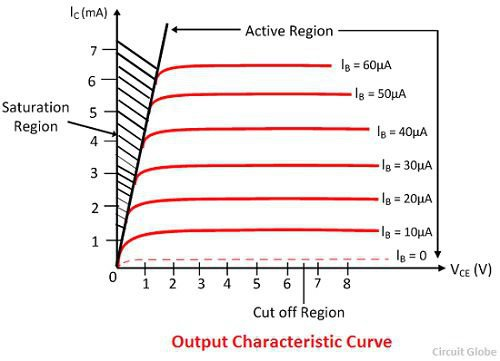
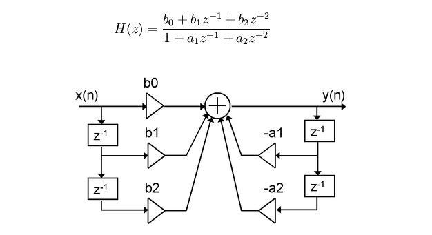
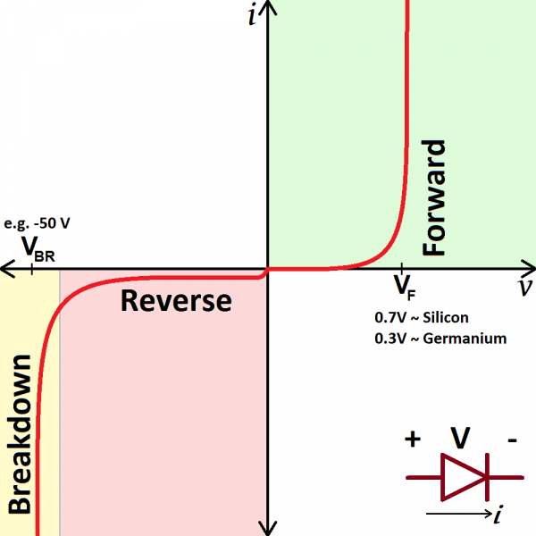
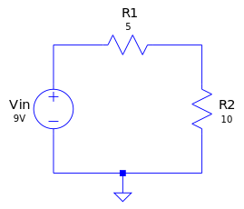
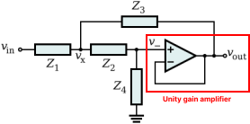
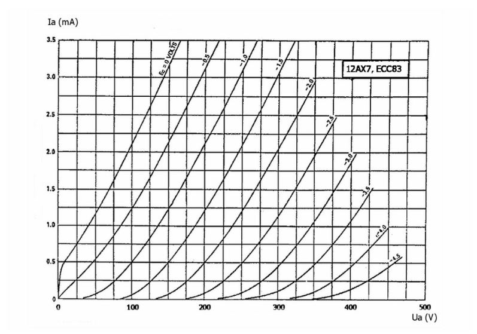

Point-To-Point™ Library
Analog Circuit Modeling
Disclaimer
The information in this manual is subject to change without notice and does not reflect the commitment of Hack Audio, LLC. The software products and subsequent libraries described in this document are subject to a License Agreement and may not be copied without granted access. For information on purchasing our plug-ins, please visit the Products section of our webiste.
- Item Name: SDK Documentation
- Item Version: 0.0.1
- Support: https://hackaudio.com/contact-us/
Overview
The Point-To-Point™ SDK is a static C++ library with a complimentary MATLAB prototyping wrapper developed to make digital circuit modeling more accessible to the audio software developer community. This library combines the strengths of nodal analysis, modified nodal analysis, state-space, and Discrete-Kirchhoff (DK) methods to form a homogenized approach to accurate, real-time analog circuit modeling at the component level.
We encourage all new users to visit www.hackaudio.com where you have access to our products and can keep up with any updates or additions to our software.
NOTE: Because this library is designed with audio developers in mind and the standard terminology for analog circuit components overlaps with the JUCE developer GUI vocabulary, standard analog circuit components are hereby referred to as circuit elements.
Circuit elements available in the Point-To-Point™ library include static resistors, variable resistors, capacitors, diodes, bipolar-junction transistors (BJTs), and dual-triode vacuum tubes. More specifically, diodes are available in both silicon and germanium semiconductor types. Each offers unique nonlinear characteristics to more accurately model distortion circuits. Similarly, the bipolar junction transistor (BJT) model is available in NPN and PNP doping types for a wider application within audio schematics. Of the three available vacuum tubes, all are manufacturer variations of the ECC83 / A12X7 dual-triode vacuum tube. RSD1 and RSD2 are models of RSD valves and the EXH is a model of an Electro-Harmonix valve. The tube models in the library are single-triode variants of the 12AX7 (called the 6AV6), allowing you to more accurately recreate schematics that highlight half dual-triodes where circuit elements are between each single-triode tube.
Available Circuits
The following circuits are currently available in all languages with the same naming convention. Note that the labels used to group circuits together may vary from our sister plug-in—the Analog Circuit Factory.
Amplifier clippers
Amplifier clipper circuits model the nonlinear distortion effects of tube preamplifiers where the input signal is effectively increased and distorted somehow. Historically copied from its use in classic Fender amps, the ECC83/12AX7 dual-triode vacuum tube has become the most common electrical component for boosting signal gain and is preferred by guitar enthusiasts over solid-state transistor alternatives to this day.
Amplifier tone stacks
Similar to a console equalizer, amplifier tone stacks perform spectral filtering to alter the frequency response of an input signal. Circuit models that only include passive components (e.g., resistors and capacitors) only can attenuate specific areas of the frequency spectrum while active filter circuits that use operational amplifiers (or sometimes diodes) have the capacity to boost spectral information.
Clipping circuits
Clipping circuits are distortion circuits that highlight individualized characteristics of either tube or solid-state schematics. For solid-state component models, germanium or silicon semiconductor types are available. The main differences between the two are the discretized modelling parameters based on the Ebers-Moll BJT/coupled-diodes model that include a saturation current (based on the diode’s reverse biased current or the transistor’s base-emitter/base-collector saturation current) and an emission coefficient (also called the “ideality factor”) due to how close the diode is to its ideal form. For audio applications, the emission coefficient changes as the component degrades over time, satisfying the desire for the modeling of older hardware. Generally, these schematic models offer nonlinear distortion without the overhead of an amplifier or stompbox clipper.
EQ circuits
Equalizer circuits specifically refer to two or more filters processed in parallel offering more unique tonal shaping. Specialty equalizers include the Baxandall shelves. For equalizers with greater control, the Graphic 7 Bands preset is an active EQ with seven static frequency gain attenuators and a fixed resonance. The Parametric 4 Bands, Peaking 2 Bands, and Shelving 2 Bands presets are all parametric equalizers meaning they have both variable frequency and gain parameters. The only passive circuit is the conjunctive bandpass filter, Low Pass High Pass, that lacks a peaking resonance parameter.
Filter circuits
The Filter Circuits showcase single-banded filter types with some combination of parameterized cutoff frequency, resonance (Q), or gain. Notable topologies include State Variable (SV), Biquad, Sallen-Key, Twin and Fliege filter types. Lite circuits contain many of the same topologies but with static parameters.
NOTE: The phase is naturally inverted for the state variable lowpass and highpass as well as the biquad bandpass.
Pedal circuits
The Pedal Circuits feature the tone and clipping sections of classic guitar pedals. Similar to the library's equalizer and filter schematics, guitar pedals also demonstrate passive and active filter circuit types. While stompboxes include input/output buffers and power stages, the defining elements of the pedal are its unique tone and clipping stages, unlike amplifiers that typically have multiple gain stages introducing nonlinearities.
Advanced Editing
Circuit Architecture
The necessary parameter layout of each circuit element should be maintained regardless of the programming language used with the library. The following tables outline a recommended format:
Voltage Input/Output
| Description | Tag | Element content |
| Node 1 (input) | <node1> | [0,NNd] |
| Node 2 (output) | <node2> | [0,NNd] |
Voltage Source
| Description | Tag | Element content |
| Voltage | <voltage> | Value in volts (V) |
| Node | <node> | [0,NNd] |
Static Resistor
| Description | Tag | Element content |
| Resistance | <value> | Value in ohms (Ω) |
| Node 1 (input) | <node1> | [0,NNd] |
| Node 2 (output) | <node2> | [0,NNd] |
Variable Resistor
| Description | Tag | Element content |
| Parameter number | <parameterNumber> | [1,NVR] |
| Direction | <Direction> | PROPORTIONAL, INVPROPORTIONAL |
| Skew | <Skew> | LINEAR, LOG |
| Node 1 (input) | <node1> | [0,NNd] |
| Node 2 (output) | <node2> | [0,NNd] |
| Maxiumum resistance | <maxValue> | Value in ohms (Ω) |
| Initialization value | <InitValue> | Value in ohms (Ω) |
Potentiometer
| Description | Tag | Element content |
| Parameter number | <parameterNumber> | [1,NVR] |
| Direction | <Direction> | PROPORTIONAL, INVPROPORTIONAL |
| Skew | <Skew> | LINEAR, LOG |
| Node 1 (input) | <node1> | [0,NNd] |
| Node 2 (divider) | <node2> | [0,NNd] |
| Node 3 (output) | <node3> | [0,NNd] |
| Maxiumum resistance | <maxValue> | Value in ohms (Ω) |
| Initialization value | <InitValue> | Value in ohms (Ω) |
NOTE: For variable resistors and potentiometers, the value parameter (MATLAB/C++ version) is synonymous with the maxValue parameter (XML version).
Capacitor
| Description | Tag | Element content |
| Capacitance | <value> | Value in farads (F) |
| Node 1 (input) | <node1> | [0,NNd] |
| Node 2 (input) | <node2> | [0,NNd] |
Op-amp
| Description | Tag | Element content |
| Non-inverting node | <nonInvertingNode> | [0,NNd] |
| Inverting node | <invertingNode> | [0,NNd] |
| Output node | <outputNode> | [0,NNd] |
Diode
| Description | Tag | Element content |
| Node 1 (input) | <node1> | [0,NNd] |
| Node 2 (output) | <node2> | [0,NNd] |
| Semiconductor type | <Semiconductor> | SILICON, GERMANIUM |
| Configuration | <Configuration> | SINGLE, MATCHEDPAIR |
| Saturation current | <SaturationCurrent> | 1e-12 (silicon), 1e-6 (germanium) |
| Thermal voltage | <ThermalVoltage> | [0.026] |
| Emission coefficient | <EmissionCoeff> | [1,2] |
BJT
| Description | Tag | Element content |
| Base node | <nodeBase> | [0,NNd] |
| Collector node | <nodeCollector> | [0,NNd] |
| Emitter node | <nodeEmitter> | [0,NNd] |
| Semiconductor type | <Semiconductor> | SILICON, GERMANIUM |
| Doping type | <Doping> | NPN, PNP |
| Saturation current | <SaturationCurrent> | 1e-12 (silicon), 1e-6 (germanium) |
| Thermal voltage | <ThermalVoltage> | [0.026] |
| Emission coefficient | <EmissionCoeff> | [1,2] |
Vacuum Tube
| Description | Tag | Element content |
| Grid node | <gridNode> | [0,NNd] |
| Anode | <nodeAnode> | [0,NNd] |
| Cathode | <nodeCathode> | [0,NNd] |
| Model | <Model> | RDS1, RSD2, EXH |
NNd = Total number of nodes in the circuit. The input value must be an integer. Node 0 denotes ground and can be used more than once.
NVR = Total number of variable resistor elements in the circuit. The input value must be an integer and greater than 0. Each value should be unique.
XML
XML circuitry is the foundation for clean and efficient modeling in the Point-To-Point™ library featuring compatibility with the MATLAB prototyping library and the standard SDK’s C++ processors. Consider the most basic structure of an XML script:
<root>
<child>
<subchild> [...] </subchild>
</child>
</root>
The XML circuits follow standard XML syntax. Because each file should support Unicode, specify as such in the script's prolog. Additionally, set the root (or "parent") element for the script as a "PointToPointCircuit".
<?xml version="1.0" encoding="UTF-8"?>
<PointToPointCircuit>
[Our circuit definition will go here...]
</PointToPointCircuit>
Consider the following RC lowpass filter as an example for our custom XML script:

A circuit name and category are necessary to keep like circuits organized. Circuit categories are usually based on the medium for which the circuit is predominately used (e.g., guitar amplifiers or pedals, basic filters or equalizers, etc.) and any other pertinent subcategories (e.g., tone stack).
First, define the preferred name and what circuit family you want it to belong to. Inside a "Settings" tag, the total number of nodes and a digital DC blocker flag is instantiated. If you are using these circuits inside the Analog Circuit Factory plug-in, an additional output trim knob can be populated by adding an "Output" tag with its defaulting value [0,1]. In custom circuits, this can otherwise be replicated by a digital linear gain parameter on the output signal.
<Name>RCLPF</Name>
<Category>BasicFilters</Category>
<Settings>
<numNodes>2</numNodes>
<hasDCBlocker>false</hasDCBlocker>
</Settings>
Similar to our settings definition, our circuit elements are defined under specific element-specific tags. Elements can be added in no particular order with no limit. If one or more of an element is present in a circuit, each instance in the script should be enclosed by a parent tag (e.g., Rs, VarRs, Pots, Cs, Ds, OPAmps, BJTs, Tube12AX7s or Vs for voltage sources) and each element should enclose its parameters with a child tag (e.g., Resistor, VariableResistor, Potentiometer, Capacitor, Diode, OPAmp, Tube or VoltageSource). Variable resistors and potentiometers support a label class to organize your knobs. Voltage inputs and outputs only should exist once for a given circuit model, so a parent tag is not required.
When a component is wired to ground, you should always use Node #2 for the zero value. Ground is not considered in the total nodes for a circuit.
<Elements>
<VoltageInput>
<node1>1</node1>
<node2>0</node2>
</VoltageInput>
<VoltageOutput>
<node1>2</node1>
<node2>0</node2>
</VoltageOutput>
<Rs>
<Resistor>
<value>1000</value>
<node1>1</node1>
<node2>2</node2>
</Resistor>
</Rs>
<Cs>
<Capacitor>
<value>10e-6</value>
<node1>2</node1>
<node2>0</node2>
</Capacitor>
</Cs>
</Elements>
For an XML template that supports all circuit elements, click here.
C++
If you would rather store your circuit models as object-oriented classes, the Point-To-Point™ library's API supports self-containment to run without dependencies on imported circuits. The API is comprised of standard audio programming function calls, taking and returning generic data types that can easily be replaced or rewritten for JUCE integration.
Custom circuits are defined as a single class (often represented as one header file) with circuit parameters defined in the class constructor.
#include "Circuit.h"
class RCLPF : public Circuit
{
public:
RCLPF()
{
[Our circuit definition will go here...]
}
~RCLPF() {};
};
Taking from the settings parameters in our XML circuit template, we will also define the position of our circuit elements all in one place. It is important that all pertinent elements are assigned to the layout object and that elements—no matter the amount—should be assigned as an std::vector. Additionally, elements are referenced from the CircuitElement namespace to ensure modeling functionality and compatibility within our circuit processors. The name of an individual element does not matter as long as it is assigned accordingly within the vector of respective CircuitElements in our layout object.
The CircuitModel class that our inherited Circuit class references is a hidden processor inside the SDK. Regardless, the CircuitLayout (instantiated as layout) contains members that can be assigned when constructing your custom circuit or customizing an existing one.
Resistors
CircuitElement::Resistor R1 { [VALUE], [NODE1], [NODE2] };
CircuitElement::Resistor R2 { /* ... */ };
CircuitElement::Resistor R3 { /* ... */ };
// ...
layout.Rs = std::vector<CircuitElement::Resistor> { R1, R2, R3, /* ... */ };
Variable Resistors
CircuitElement::VariableResistor Vr1 { [VALUE], [ID],
CircuitElement::ParamDirection::[DIRECTION],
CircuitElement::Skew::[SKEW],
[NODE1],
[NODE2],
[INITVAL] }; // [0,1]
CircuitElement::VariableResistor Vr2 { /* ... */ };
// ...
layout.VarRs = std::vector<CircuitElement::VariableResistor> { Vr1, Vr2, /* ... */ };
Potentiometers
CircuitElement::Potentiometer Pt1 { [VALUE], [ID],
CircuitElement::ParamDirection::[DIRECTION],
CircuitElement::Skew::[SKEW],
[NODE1],
[NODE2],
[NODE3],
[INITVAL] }; // [0,1]
CircuitElement::VariableResistor Pt2 { /* ... */ };
// ...
layout.Pots = std::vector<CircuitElement::Potentiometer> { Pt1, Pt2, /* ... */ };
Capacitors
CircuitElement::Capacitor C1 { [VALUE], [NODE1], [NODE2] };
CircuitElement::Capacitor C2 { /* ... */ };
CircuitElement::Capacitor C3 { /* ... */ };
// ...
layout.Rs = std::vector<CircuitElement::Resistor> { C1, C2, C3, /* ... */ }; // ...
Op-amps
CircuitElement::OPAmp OP1 { [NONINVERTING_NODE], [INVERTING_NODE], [OUTPUT_NODE] };
CircuitElement::OPAmp OP2 { /* ... */ };
CircuitElement::OPAmp OP3 { /* ... */ };
// ...
layout.OPAmps = std::vector<CircuitElement::OPAmps> { OP1, OP2, OP3, /* ... */ };
Diodes
CircuitElement::Diode D1 { CircuitElement::Diode::Semiconductor::[TYPE],
CircuitElement::Diode::Configuration::[CONFIG] };
CircuitElement::Diode D2 { /* ... */ };
CircuitElement::Diode D3 { /* ... */ };
// ...
layout.Ds = std::vector<CircuitElement::Diode> { D1, D2, D3, /* ... */ };
BJTs
CircuitElement::BJT BJT1 { CircuitElement::BJT::Doping::[TYPE],
CircuitElement::BJT::Semiconductor::[TYPE],
[BASE_NODE],
[COLLECTOR_NODE],
[EMITTER_NODE] };
CircuitElement::Diode BJT2 { /* ... */ };
CircuitElement::Diode BJT3 { /* ... */ };
// ...
layout.BJTs = std::vector<CircuitElement::BJT> { BJT1, BJT2, BJT3, /* ... */ };
Tubes
CircuitElement::Tube12AX7 TUBE1 { CircuitElement::Tube12AX7::[TYPE],
[GRID_NODE],
[ANODE],
[CATHODE] };
CircuitElement::Tube12AX7 TUBE2 { /* ... */ };
CircuitElement::Tube12AX7 TUBE3 { /* ... */ };
// ...
layout.Tube12AX7s = std::vector<CircuitElement::Tube12AX7> { TUBE1, TUBE2, TUBE3, /* ... */ };
Public Member Functions
The following functions belong to the Circuit class, meaning that these should be used in the main DSP processing of your circuit(s):
void process (const float* input, // buffer pointer float* output, // buffer pointer int numSamples, // buffer length int channel) // [0,1]
Block processor that takes and returns a pointer to separate respective buffers.
float processInPlace (float* buffer, // buffer pointer int numSamples, // buffer length int channel) // [0,1]
Block processor that takes and returns a pointer to the same buffer.
float processSample (float x, // sample by value int channel) // [0,1]
Per-sample processor that is not dependent on a fixed buffer. This is often implemented in a custom block processor similar to process or processInPlace. Note that all the above processor functions support two-channel non-interleaved processing.
void prepare (double sampleRate, // circuit sampling rate int bufferSize) // samples per buffer
Processor initializer that should be called before processing occurs. The JUCE framework utilizes the AudioProcessor's prepareToPlay function that is called per internal calls.
std::vector<double> setParameters (std::vector<double> parameters) // parameter array
General connection between your main processor's parameter states and the circuit's internal parameter states. As an alternative for larger systems, the JUCE framework supports the retrieval of raw parameter values (as atomic float pointers) insider the constructor of your circuit.
void setSamples4Smooth (int samples4Smooth) // smoothing ramp size
Sets smoothing time for all parameterized elements in a circuit. If you are wanting a specific millisecond ramp, consider replacing samples4Smooth with a basic conversion:
int samples4Smooth = targetMilliseconds / 1000 * sampleRate;
The inside of our RC lowpass class constructor should look as follows:
layout.numNodes = 2;
layout.Vin = CircuitElement::VoltageInput { 1, 0 };
layout.Vout = CircuitElement::VoltageOutput { 2, 0 };
CircuitElement::Resistor R { 4700.0, 1, 2 };
layout.Rs = std::vector<CircuitElement::Resistor> { R };
CircuitElement::Resistor C { 47e-9, 2, 0 };
layout.Cs = std::vector<CircuitElement::Capacitor> { C };
layout.hasDCBlocker = false; // if false, can be omitted
circuit = CircuitModel(layout);
Using the JUCE Framework
To get started in JUCE, a few definitions need to be made inside the main Projucer settings as well as the individual exporter settings. Inside the project settings, set the following preprocessor definition:
JUCE_MODAL_LOOPS_PERMITTED=1
In the Exporter section of your main IDE, set External Libraries To Link to CircuitModel. In the respective debug and release sections, set Header Search Paths to:
../../sdks/PointToPoint/inc
and Extra Library Search Paths to:
../../sdks/PointToPoint/lib/Debug
../../sdks/PointToPoint/lib/Release
MATLAB
The MATLAB version of the Point-To-Point™ library is a 1:1 functional recreation of the C++ library that introduces a testing script for rapid prototyping. Included in the test script is a waveform oscillator, frequency repsonse plot, total harmonic distortion (THD) plot, and a DC sweep analysis plot.
Custom Circuits
Object-oriented programming (OOP) in MATLAB allows you to copy over your C++ classes. Similar to our C++ format, any custom circuit made with the Point-To-Point™ library will inherit a Circuit class which itself inherits from the abstract CircuitProcessor class that contains all necessary virtual processing functions for your circuit. The general structure for a circuit only contains a class constructor that references the layout and circuit members. The layout property of the inherited Circuit class allows for elements, relevant voltage sources, nodes totals, output gain parameters, and the DC blocker flag to be initialized. Note that the C++ supports these members as part of the CircuitLayout struct while the MATLAB version layout variables are accessed as normal members. The CircuitLayout constructor handles the assignment of element arrays (as well as voltage sources and output gain parameters) to be passed on to processing. The DC blocker flag is defaulted to false and only needs to be explicitly initialized if it is necessary.
classdef RCLPF < Circuit methods function [o] = RCLPF o.layout.numNodes = 2; o.layout.Vin = VoltageInput (1, 0) o.layout.Vin = VoltageOutput (2, 0) R1 = Resistor (1e3, 1, 2); o.layout.Rs = R1; C1 = Capacitor (10e-6, 2, 0); o.layout.Cs = C1; o.circuit = CircuitModel(o.layout); end end end
Similar to how the C++ elements are used in your circuit constructors, the following are examples of each circuit element type and how they would be implemented in a custom circuit like the one above:
Resistors
R1 = Resistor (VALUE, NODE1, NODE2); R2 = Resistor ( ... ); R3 = Resistor ( ... ); % ... o.layout.Rs = [R1; R2; R3; ... ];
Variable Resistors
Vr1 = VariableResistor (VALUE, ID ...,
VariableResistorDirection.DIRECTION ...,
VariableResistorSkew.SKEW ...,
NODE1, NODE2, 'LABEL',
INITVAL); % [0,1]
Vr2 = VariableResistor ( ... );
Vr3 = VariableResistor ( ... );
% ...
o.layout.VarRs = [Vr1; Vr2; Vr3; ... ];
Potentiometers
Pt1 = Potentiometer (VALUE, ID ...,
VariableResistorDirection.DIRECTION ...,
VariableResistorSkew.SKEW ...,
NODE1, NODE2, NODE3, 'LABEL',
INITVAL); % [0,1]
Pt2 = Potentiometer ( ... );
Pt3 = Potentiometer ( ... );
% ...
o.layout.Pots = [Pt1; Pt2; Pt3; ... ];
Note: The Potentiometer element utilizes the same enumerations as the Variable Resistor element class.
Capacitors
C1 = Resistor (VALUE, NODE1, NODE2); C2 = Resistor ( ... ); C3 = Resistor ( ... ); % ... o.layout.Cs = [C1; C2; C3; ... ];
Op-amps
OP1 = OPAmp (NONINVERTING_NODE, INVERTING_NODE, OUTPUT_NODE); OP2 = OPAmp ( ... ); OP3 = OPAmp ( ... ); % ... o.layout.OPAmps = [OP1; OP2; OP3; ... ];
Diodes
D1 = Diode (Semiconductor.TYPE ...,
Configuration.TYPE ...,
NODE1, NODE2);
D2 = Diode ( ... );
D3 = Diode ( ... );
% ...
o.layout.Ds = [D1; D2; D3; ... ];
BJTs
BJT1 = BJT (Doping.TYPE ...,
Semiconductor.TYPE ...,
BASE_NODE, COLLECTOR_NODE, EMITTER_NODE);
BJT2 = BJT ( ... );
BJT3 = BJT ( ... );
% ...
o.layout.BJTs = [BJT1; BJT2; BJT3; ... ];
Tubes
TUBE1 = Tube12AX7 (Model12AX7.TYPE, GRID_NODE, ANODE, CATHODE); TUBE2 = Tube12AX7 ( ... ); TUBE3 = Tube12AX7 ( ... ); % ... o.layout.Tube12AX7s = [TUBE1; TUBE2; TUBE3; ... ];
Circuit Testing
If you are interested in the characteristics of a circuit that has any kind of clipping, the waveform oscillator will compare a sine wave input to the output of the circuit. To find the harmonics created by a circuit, the THD plot introduces a high-frequency sine wave and converts the output to the frequency domain via the fast Fourier transform (FFT). The built-in FFT function from MATLAB labels our peaks with the appropriate harmonic numbers showing only even, only odd, or a mixture of harmonics. Additionally, the noise floor of our signal can be measured in decibels (dB) by examining the noise-like black signal on the plot's bottom bound.
To analyze a filter circuit, plot the frequency response of a filter system via an impulse response (IR) that has been passed through your circuit. The IR length is defaulted to size N = 213 = 8192. The typical Cooley-Tukey radix-2 FFT algorithm requires the transform's input to be a power of 2 (POT), but because MATLAB uses MIT's FFTW (Fastest Fourier Transform in the West), NPOT values are still processed effectively. MATLAB offers the nextpow2 function to pad your impulse response input.
The test script can take either a MATLAB m-file circuit from the circuit template or an XML circuit. Depending on the circuit that you want to prototype, make sure the deprecated circuit is commented out. Additionally, you can port your circuit from its MATLAB class form to XML from the testing script via the saveXMLCircuit function.
Note that, to access your circuit's capacity in the testing script, the PointToPointIncludes and PointToPointRemoves should be readable in your MATLAB Current Folder path.
Resources
For more about the Point-To-Point™ library, Hack Audio's founder Dr. Eric Tarr introduced the SDK at the 2022 Audio Developers Conference in London, England.
To see the library in action, check out the videos on the Analog Circuit Factory landing page where Dr. Eric Tarr and Hack Audio developer Tim Leete have demoed the plug-in.
Appendix
Baxandall shelf
Baxandall equalizers are shelving filters characterized by a gentle slope in the filter's transition band. Because the Q factor is so gradual, the filter bandwidth often covers the entire input signal where the altered portion of the signal often flattens out beyond the sampling Nyquist rate. While two-band Baxandall equalizers have low and high shelves, three-band and four-band equalizers include low-resonance peaking filters. Baxandall filters that include a balance parameter can attenuate or boost the overall filter response gain by approximately ±4.5dBFS.
Bipolar junction transistor (BJT)
The predecessor of the MOS field-effect transistor (MOSFET), the bipolar junction transistor (BJT) offers switching and amplification while maintaining its high power, low noise characteristics. Of its three characteristic regions (e.g., active, saturated and cut-off), the BJT has a constant gain when in the active region, lending its use for amplification purposes as a linear component.
I-V plot of bipolar junction transistor. See more here.
The BJT is a triode whose three terminals—the collector, base and emitter— are of alternating doped types with the most common being an NPN BJT. Defined by a heavily doped emitter, a P-type base, and an N-type collector, the NPN transistor maintains higher transconductance and speed over its PNP counterpart. [20] The BJT can also be considered as two fused diodes since we know that a diode is just a fused PN junction. Functionally, however, only one diode is in use which is why the BJT's schematic emblem has an arrow at the emitter terminal.
A BJT can conceptualized as a valve; for example, if a positive voltage exists across the collector-emitter terminals of an NPN BJT, the low activation characteristic of these transistors allows a small amount of current to trigger greater current flow from the collector to the emitter. This ratio—notated as β or hFE—denotes the efficiency of a BJT by the current over the collector-emitter terminal (IC) divided by the current from the base terminal ((IB). The hFE of a BJT is almost always constant when in the active region which is dependent on the collector-emitter to base current ratio. These characteristics, along with their aforementioned low noise and high power especially at high frequencies, fit the context well for the amplification of audio signals in solid-state circuits.
Biquad filter
Biquadratic filters, often shortened to "biquad", are an analog filter topology whose transfer function is two quadratic equations— one in the numerator and one in denominator—resulting in a two-pole, two-zero filter. The biquad transfer function is used as a general form with Sallen-Key and state variable filters being rearrangable into this form.
Digital biquad transfer function and block diagram. See more here.
Seen commonly in audio software, the discrete model of the analog biquad can be found using the bilinear z-transform, utilizing feedforward coefficients (b1-2) and feedback coefficients (a1-2) of no more than two samples in memory.
Capacitor
Capacitors, like resistors, are also a linear element and are the building block for filter circuits as they are used to store separated charges. A standard parallel plate capacitor is made from two conductive plates separated by some insulating medium. Some charge is impeded on one side of the capacitor (with the inverse charge on the opposite side) and—with enough pressure—will discharge across the plates. Capacitors in their initial state act as a short circuit, meaning there is a nominal amount of resistance for current to flow. Inversely, when a capacitor is fully charged (at its maximum voltage), the element will act as an open circuit. For audio schematics, capacitors are measured in farads (F) and, can be seen implemented with values as small as picofarads (pF).
DC blocker (digital)
Functionally, the digital DC blocker acts as a high-pass filter that attenuates near-zero values. In hardware circuits, capacitive coupling may introduce a DC component which, in the frequency domain, usually populates at 0Hz. Multiple instances of these circuits can cause mixing imbalances as these signals compound.
The discretized DC blocker subtracts the average of the signal over time. For example, a square wave with peaking values of [-1,1] has an offset of 0.5.
Diode
Schematic symbol of a diode.
The diode is an electrical component with two polarized terminals (e.g, anode and cathode).
The ideal diode is meant to control the direction of current flow. When the voltage over a diode is negative, the component acts as an open circuit and passes no current. Inversely, when the input voltage is positive, the component acts as a short circuit and should pass 0V. We know, however, that these are ideals and that the average diode implemented in an audio schematic is more complex as a nonlinear element. The semiconductor diode—the most common diode type—requires a certain amount of voltage to pass current. Consider the current-voltage relationship of two common semiconductor diode types:
Typical I-V characteristic of silicon and germanium diodes. See more here.
Note that the forward bias quadrant signifies when the diode is "on" and the reverse bias when it is "off". Even though in the reverse bias quadrant the diode ideally passes no signal, it passes a negligible amount (nA, nanoamperes) called reverse saturation current. The saturation current of each diode is dependent on its semiconductor type. There is also a case that a diode is overloaded into a "breakdown" stage where negative signals pass inversely over the diode from cathode to anode.
The rectifier diode, a derivative of general semiconductor diodes, is often found in schematics under power supply subcircuits as they aid in converting alternating current (AC) in to direct current for use in devices that run on fixed DC (e.g., guitar pedals). Outside of its aesthetic use, a specialty type of diode called a light-emitting diode (LED) is also found in audio applications—most specifically the optical compressor. When the threshold of the compressor is decreased, more signal is introduced into the unit causing the LED to light up. A coupled photoresistor (a light-sensitive resistor component) reacts by increasing its resistance and attenuating the output signal.
Kirchhoff's Current Law (KCL)
Kirchhoff's Current Law states that the current entering a node must be equal to the current leaving the same node. For example, a single node at a four-way junction has two currents entering (i1, i2) and two respective currents leaving (i3, i4). The following would be true according to this principle:
- i1 + i2 = i3 + i4
- OR
- i1 + i2 + (-i3) + (-i4) = 0
Kirchhoff's Voltage Law (KVL)
Kirchhoff's Voltage Law states that the sum of the voltages across components in a closed circuit is equal to zero. This can also be called the loop law or Kirchhoff's second law.
Simple series resistor circuit with 9V input voltage.
A basic circuit like the series resistor schematic above can easily display the law in action. A battery is supplying 9V (DC) and we will use a current of i = 0.6A. To determine if the voltage drops across each resistor will nullify our input voltage value, we use Ohm's Law over each component.
- R1 → V = 0.6 ⋅ 5 = 3V
- R2 → V = 0.6 ⋅ 10 = 6V
When the current over a component goes from positive to negative, this will be deemed a voltage drop with the polarity represented as negative.
- ΣV → 9V (battery) - 3V - 6V = 0V
While there are edge cases where KVL is not applicable, the general audio circuit will most likely always satisfy this principle.
Modified nodal analysis (MNA)
Modified nodal analysis is an expansion of standard nodal analysis via the use of matrix transformations to relieve difficulty when voltage-defined components are present in a circuit. Note that basic nodal analysis is only applicable in circuit networks where branch currents can be expressed in terms of branch voltages.
The system of equations in MNA are expressed as b = A ⋅ x where b is the input voltages (represented as an Nx1 matrix), A is the admittance matrix of our nodes from nodal analysis (represented as an NxN matrix), and x is the unknown voltages and I1 current.
To extract a systems transfer function, the matrix must be solved in a form that expresses such a relationship. For our base form, b = A ⋅ x should be expressed as x = A-1 ⋅ b.
Nodal analysis
Nodal analysis is a circuit-solving technique where—by assigning a reference (that is ideally ground)—Kirchhoff's Current Law (KCL) can be used to solve unknown voltages at nodes using known component relationships. Kirchhoff's Voltage Law (KVL) is automatically satisfied when using this technique.
This type of analysis is most often used to describe linear time-invariant (LTI) systems as nodal analysis is based on the principle that some input voltage is related to some output voltage by node voltages defined as linear relationships. Conversely, to describe a nonlinear component—like an ideal diode, strong assumptions have to be made regarding its biased state to solve even just a single state of the circuit. Other general solvers—like the Newton-Raphson method—can be used to approximate the behavior of a nonlinear element.
- The following steps are considered:
Ohm's Law
Ohm's Law states that there is a linear relationship between the voltage drop over a component and the current going through it. This can be defined simply by
V = iR
where V is voltage, i is current and R is resistance. If Ohm's Law is true, fixed resistance causes voltage and current to be proportional, and fixed voltage causes current to be inversely proportional to its resistance. This law also can be rearranged to define resistance as R = V / i.
Resistor
Resistors are a linear hardware component engineered to restrict current flow. Standard resistors have a fixed resistance value while variable resistors have a resistance bound to some range of values, allowing for gain parameterization for volume controls or use as a voltage regulator. Three-terminal variable resistors are also called potentiometers and should be used accordingly in your circuit models (see voltage divider). For audio schematics, fixed resistors are usually assumed to be linear, meaning the voltage drop across the element is proportional to its input. Resistors are measured in Ohms (Ω).
RSD
RSD was the rebranded name of the East-German tube manufacturer Rundfunk- und Fernmelde-Technik (“broadcasting and telecommunications technology”) who sold relabeled components to other well-known German manufacturers for resale such as Telefunken and Siemens.
Sallen-Key filter
The Sallen-Key topology supports second-order active filters. It is a degenerate of the voltage-controlled voltage-source filter (VCVS) topology, meaning that it is derived from a limiting case of the VCVS topology where one element—in this case, an infinite input impedance and zero output impedance—to implement 2-pole lowpass, highpass or bandpass filters. The filter, designed by R.P. Sallen and E.L. Key at the MIT Lincoln Laboratory (1955), utilizes a unity gain amplifier.
Sallen-Key filter. See more here.
An amplification factor of 1 may not be beneficial for a signal boost, but the unit gain amplifier acts as a voltage buffer which prevents one amplification stage's input impedance from affecting the output impedance of a separate amplification stage. [16]
Sallen-Key filters are a biquad filter type.
State-space modeling
State-space modeling (and its subsequent representation) is a method for modeling linear time-invariant (LTI) dynamic systems using a generalized first-order form of ẋ = Ax + Bu which is based on a pair of assumptions that most physical systems are nonlinear but that the linearization used in system approximation allows us to use a first-order linear equation when modeling. The state-space representation has an output equation of y = Cx + Du. For both equations of the standard form, A-D are scalars or matrices, x is our state vector and u is our input. For use in audio circuit modeling, the discretized version of state-space modeling is used.
State-space offers benefits over modified nodal analysis as MNA unfortunately requires the constant computation of an inverse matrix, restricting models from being parameterizable without being computationally gouging.
State variable filter
An analog filter that offers variable frequency cutoff (fc), gain (A), and resonance (Q), the state variable filter is often constructed with three operational amplifiers and offers lowpass, highpass, and bandpass output taps. A fourth op-amp is optional to include the notch filter response. The three op-amp design is comprised of two identical op-amp integrators that each act as a first-order, single pole lowpass filter with the third op-amp acting as a summing amplifier where filter gain and damping are determined. [17]
State variable filters are a biquad filter type.
Twin-T filter
The Twin-T filter topology is a network designed to provide notch responses of high attenuation gain with only two operational amplifiers.
Vacuum tube
Also known as a thermionic valve, the vacuum tube—by definition—is a component containing "two or more electrodes suspended in a glass bulb." [12] The inside of the bulb has all the air stripped from it, leaving only a vacuum. Due to its coating during manufacturing, the cathode (or negatively charged electrode) emits electrons extremely well when heated to its working temperature of nearly 777°C or 1430.6°F. While not a functioning electrode, the tungsten wire heater supply inside the tube consequently heats the cathode when it is also brought to high temperatures. Note that the heater and the cathode are not connected. When at the working temperature, the cathode produces a cloud of electrons known as a space charge which are received (via impact at extremely high speeds) by our positively charged anode. Without a receiving electrode, the clouded electrons from our cathode would become so dense that electron production would essentially be halted as potential electrons would be repelled from the cathode. This kind of one-way transferral of energy—negative charge from cathode (-) to anode (+)—is generally known as a diode or, in this case, a vacuum diode. It's important to note that, in the literature, it is easier to conceptualize or communicate positive computations, so you will often see the current going over the vacuum diode as the current from anode to cathode (Ia)—which is positive—rather than the negative current from cathode to anode.
The third node, characteristic of dual-triode vacuum tubes seen in audio circuits, is the control grid, a "spiral of fine molybdenum wire" [12] that finds itself coiled relatively closer to the cathode than the anode. When a positive charge is applied to the grid, its fine mesh composition isn't capable of drawing in the electrons leading them to fly through to the anode. However, if a negative charge is applied to the control grid, the anode is cut off or choked. Similar changes in grid voltage and anode voltage heavily favor the grid due to its relative position to the cathode. The voltage required to cut off the valve is referred to as the grid base.
Static anode characteristic plot of the ECC83/12AX7 dual-triode vacuum tube. See more here.
Keeping in mind the single curve shown on a diode's I-V characteristic (or static anode characteristic), the triode's I-V plot contains a group of curves that show the nonlinear effects of voltage on the current dependent on different levels of inflicted negative voltage in the grid.
Voltage divider
Voltage division, the result of a physical voltage divider, is the act of arranging passive linear components in a way that the output voltage (Vout) is a fraction of its relative input voltage (Vin). A general voltage divider example is a naive circuit where an output node is placed between series resistors. This is also known as the implementation of a resistive divider.
While variable voltage dividers as potentiometers are most common in audio circuits, capacitors are also capable of creating voltage dividers. The RC lowpass filter used as a Point-To-Point™ circuit model is a voltage divider splitting a resistor and a capacitor tied to ground.
Voltage drop
Defined by Ohm’s Law and used to support Kirchhoff’s Voltage Law (KVL), the voltage drop is the total voltage lost over one analog component or the entire circuit due to conductor resistance. Conductor resistance is merely how much a conductive medium/material opposes the flow of electric current.
References
[ ... ]
- [1] https://www.watfordvalves.com/products.asp?ID=1&man=42
- [2] https://www.e-education.psu.edu/ae868/node/967
- [3] https://openbooks.library.umass.edu/funee/chapter/3-2/
- [4] https://weinman.cs.grinnell.edu/courses/CSC211/2023S/electricity/kirchhoff.html
- [5] https://sites.pitt.edu/~qiw4/Academic/ME2082/Transistor%20Basics.pdf
- [6] https://openlab.citytech.cuny.edu/emtlabs/potentiometer/
- [7] https://physics.wwu.edu/variable-resistor
- [8] https://www.cpp.edu/faculty/fkhoshnoud/lecture-32.pdf
- [9] https://resources.pcb.cadence.com/blog/2019-what-is-linear-and-nonlinear-resistance
- [10] https://web.stanford.edu/class/archive/engr/engr40m.1178/slides/signals.pdf
- [11] https://weinman.cs.grinnell.edu/courses/CSC211/2025S/electricity/diodes.html
- [12] https://tubes.mit.edu/6S917/_static/2024/resources/des_preamps_chap_1.pdf
- [13] https://lehman.edu/faculty/anchordoqui/lab2.pdf
- [14] https://www.electronics-tutorials.ws/dccircuits/kirchhoffs-voltage-law.html
- [15] https://www.electronics-tutorials.ws/dccircuits/kirchhoffs-voltage-law.html
- [16] https://ultimateelectronicsbook.com/op-amp-voltage-buffer/
- [17] https://www.electronics-tutorials.ws/filter/state-variable-filter.html
- [18] https://www.ti.com/lit/an/slyt145/slyt145.pdf
- [19] https://www.analog.com/en/resources/technical-articles/a-beginners-guide-to-filter-topologies.html
- [20] https://www.chu.berkeley.edu/wp-content/uploads/2020/01/Chenming-Hu_ch8-2.pdf
- [21] https://lpsa.swarthmore.edu/Systems/Electrical/mna/MNA2.html
- [22] https://ctms.engin.umich.edu/CTMS/index.php?example=Introduction§ion=SystemModeling